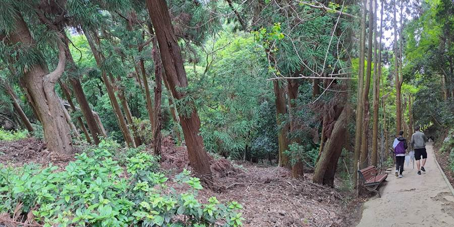
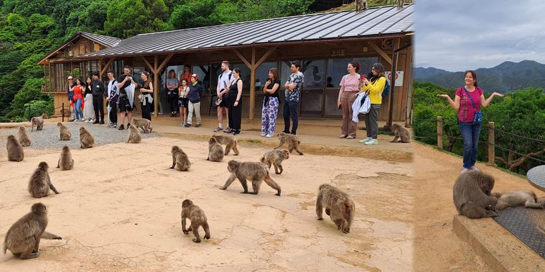
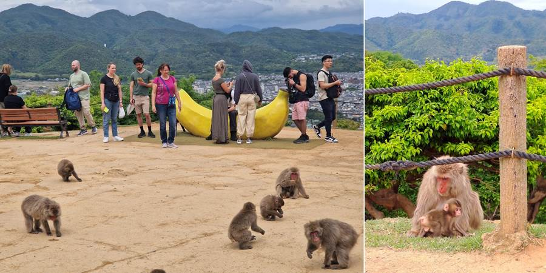
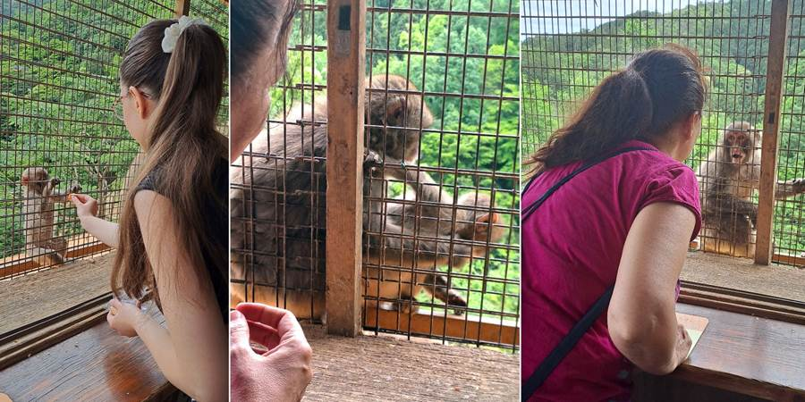

Dan deseti : Majmuni
Došla sam po decu. Sad kad smo uspeli da ignorišemo prljave zidove, kućica je udobna. Tri puta veća od one u Tokiju. Ima spavaću sobu za njih troje. Dnevnu gde ja spavam, trpezariju sa stolom velikim kao u našoj trpezariji i šest stolica, kuhinju, kupatilo, odvojen WC i terasu. Stvarno ogromno za japanski smeštaj.
Luka lupa glavu po kući u Kjotu i psuje. Nestandardno je velik za njih.
Prvi put nas vozi žena taksijem. I nije stara. Mislim nije prastara kao one čike. Tu je negde kao ja. Nije još za penziju. A u taksijima su oni pleteni beli miljei po naslonima kao nekada kod nas na televizoru. Neobično.
A sad majmunska posla.
Otišli smo do majmuna koji su na slobodi na vrhu planine. Pola sata uzbrdo od ulaza. Peške.
Kad smo stigli, prelep pogled: Kjoto u zalivu, okružen planinama, a ispred nas gusta šuma. Tu i tamo poneki majmun. Ubrzo nailazimo na majmunicu s preslatkom bebicom. Još nas drži oduševljenje kad stižu čuvari s kantama hrane.
Odjednom stampedo. Majmuni nadiru iz šume sa svih strana. Bilo ih je svuda, pa i po krovu! Poneki se i posvađaju, skviče, jure se, trče nam oko nogu.
Pravila su jasna: ne dirati majmune, ne gledati ih u oči, ne približavati se na manje od dva metra, ne pokazivati zube.
Jedan majmun priđe devojci i prođe tik pored nje. Ona, zbunjeno i smešno usplahirena, reče:
"A kako sad da držim dva metra razdaljine?"
 Majmuni se mogu i hraniti. Ali tako da su ljudi u kavezu a oni na slobodi. Kako japanski. Kupili smo komadiće jabuke u kućici sa rešetkama na prozoru i kroz malene otvore smo davali majmunima hranu. Malo slatko majmunče je uzimalo od Kristine. Kad jedan veći majmun bio zavidan i uzme majmunče sa dve šape i baci ga dole. Ja poludela. Zajebi pravilo da ih ne gledaš u oči. Unela mu se u facu. Oči u oči. Streljam ga pogledom i grdim. Zvek on šapom po rešetkama. Kažu deca, šta ako te je sad zapamtio pa ti se osveti kad izađeš. Sproveli su me brzo do izlaza koji smo otkrili da kreće baš pored kućice tako da sam izbegla osvetu majmuna.
Na putu kroz šumu su postavljene table sa kviz pitanjima o majmunima i ponuđena tri odgovora. Digneš tablu i vidiš tačan odgovor. Prilazim, Luka kaže 150, podiže, smeje se i kaže, pogodio sam. Reko a koje je pitanje, vidim sve piše na katakani, jednom od tri pisma koje Japanci koriste. Petar šaljivo: Piše ti, pročitaj. Luka odgovara: Ne potcenjuj Sandru. A ja? Ja velika do neba.
Ne propustite sledeću avanturu!
Kad Sandra krene u novi kraj sveta, vaš inbox prvi sazna. Prijavite se i stižu vam sve nove priče mejlom.